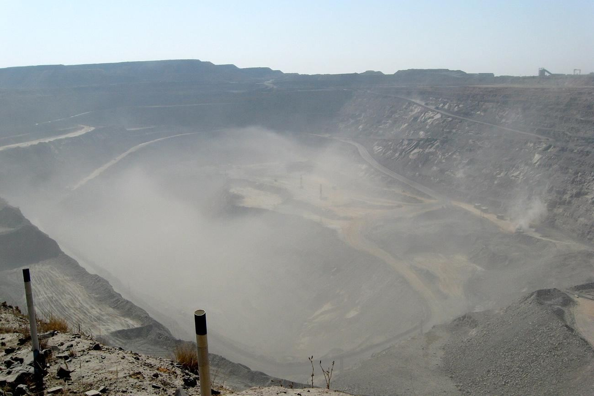

Botswana answers Penny: partner, pre-empt, or bring a friend
Minister Moeti Mohwasa told parliament the state's 15% of De Beers carries 'complete freedom' — join the Penny consortium, exercise pre-emption alone, or bid with a third party. Two bidders remain from six; close is eyed by Q4.
By The Policy Desk

What changed
The preferred bidder was named in London; the answer came from Gaborone.
What it means
- Anglo has chosen its buyer, but Botswana gets to choose the deal. A pre-emption right held by a seller's most important partner is the closest thing M&A has to a veto, and Gaborone has now said, politely and in parliament, that it knows it.
Key figures
| SpeakerMoeti Mohwasa · minister for state president | |
|---|---|
| The stake15% of De Beers · right of first refusal | |
| The optionspartner · pre-empt alone · bring a third party | |
| Preferred bidderGlobal Diamond Consortium · Gareth Penny |
Source: The statement · Gaborone, 17 July
Gaborone holds the cards
On Friday, Moeti Mohwasa, Botswana's minister for state president, defence and security, confirmed to lawmakers that Anglo American has selected the Global Diamond Consortium as preferred bidder for its 85% of De Beers — and then spent the rest of his statement reminding the room who actually holds the cards.
Botswana's 15% stake carries a right of first refusal, and Mohwasa said the state retains "complete freedom" in how it plays it: join the consortium as a partner, exercise pre-emption on its own, or exercise it alongside a third party of its choosing.
Nothing, in other words, has been decided except the identity of the party Botswana will be negotiating with — or against.
What rides on the answer · percent
Source: The statement · Gaborone, 17 July
A reunion at the table
The consortium itself is a reunion. It is led by Gareth Penny, De Beers' chief executive from 2006 to 2010 and now chair of asset manager Ninety One, with a Qatari investment fund and Israeli businessman Nir Livnat alongside; its proposal contemplates participation by Angola and Namibia.
The field has narrowed from six bidders in 2025 to two, and Anglo — which put De Beers up for sale in May 2024 — is aiming to close by the fourth quarter, subject to conditions that prominently include Botswana's approval.
| Figure | |
|---|---|
| Anglo'S Stake, For Sale | 85 |
| Diamonds' Share Of Botswana Exports | ~80 |
| Share Of State Revenue | ~33 |
| Botswana'S Stake Today | 15 |
A corporate sale on one line; a national budget on the next The arithmetic beneath the De Beers sale. Carat Capital graphics desk.
A nation, not a company
The stakes in Gaborone are not corporate but national. Diamonds account for roughly 80% of Botswana's exports and about a third of state revenue, and President Duma Boko's government has said openly that it wants a larger — even controlling — position in the company that sells them.
Every path to closing runs through the same capital city that just declined to commit itself.
The story so far
Go deeper
Method
A corporate sale on one line; a national budget on the next